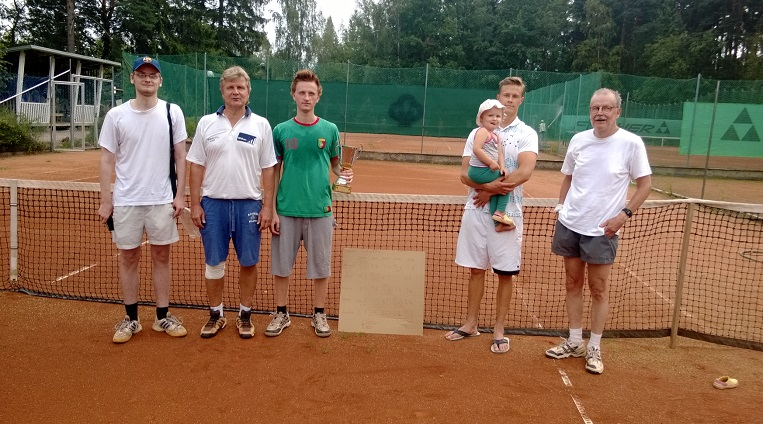

Tennis yleisesti
🎾Mitä tennis oikein on?
Tennis on mailapeli, jota voidaan pelata joko kaksinpelinä tai nelinpelinä. Pelaajat lyövät palloa mailalla verkon yli ja tavoitteena on saada pallo vastustajan kenttäpuolelle niin, ettei vastustaja pysty palauttamaan sitä sääntöjen mukaisesti.
Tenniksessä yhdistyvät nopeus, kestävyys, tarkkuus, tekniikka ja taktinen ajattelu. Laji sopii hyvin sekä kilpailulliseen pelaamiseen että rennoksi harrastukseksi.
Kenttä vaikuttaa peliin

Tenniskentän pinta vaikuttaa merkittävästi pelin nopeuteen ja pelityyliin.
Kova alusta
Kova kenttä on yleinen tenniskenttätyyppi. Peli on yleensä melko nopeaa ja pallon pomppu tasainen.
Massakenttä
Massakentällä pallo hidastuu ja pomppaa korkeammalle. Pitkät pallorallit ovat massalla tavallisia.
Nurmikenttä
Nurmikentällä pallo liikkuu nopeasti ja pomppu jää yleensä matalaksi. Peli voi olla hyvin nopearytmistä.
Mikä tekee tenniksestä kiinnostavaa?
Tenniksessä ei ole kyse pelkästään kovaa lyömisestä. Pelaajan täytyy miettiä jatkuvasti sijoittumista, lyöntien suuntaa, vastustajan liikkeitä ja omaa taktiikkaansa.